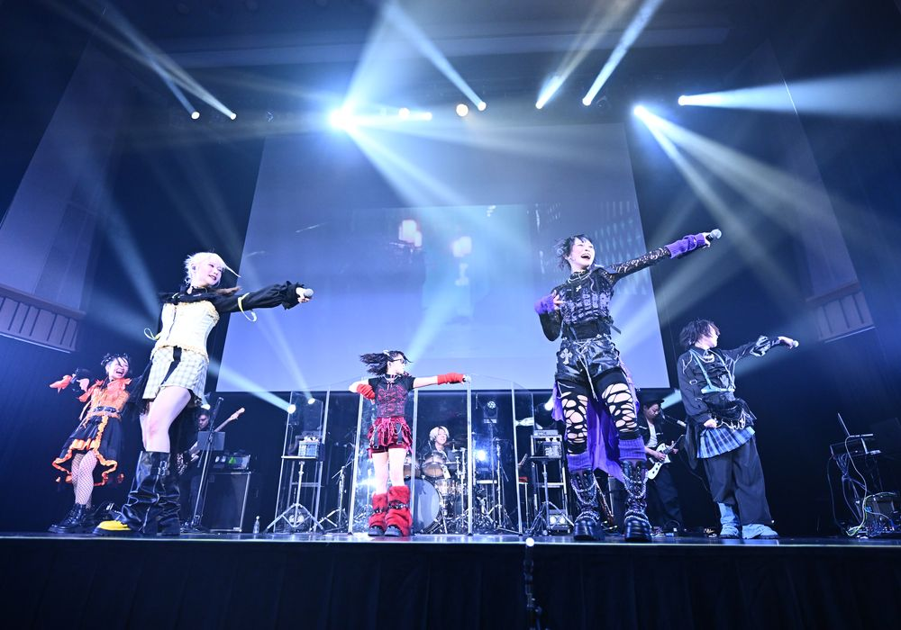
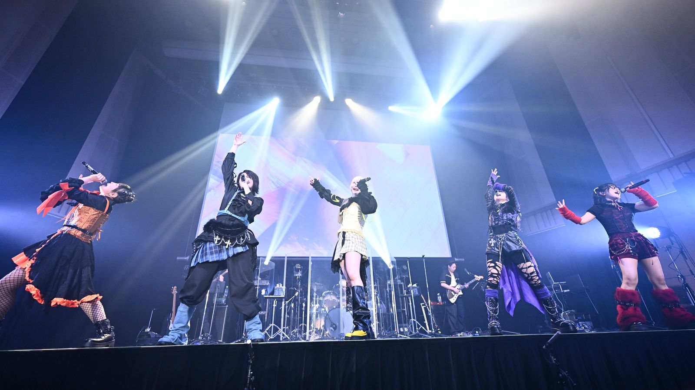
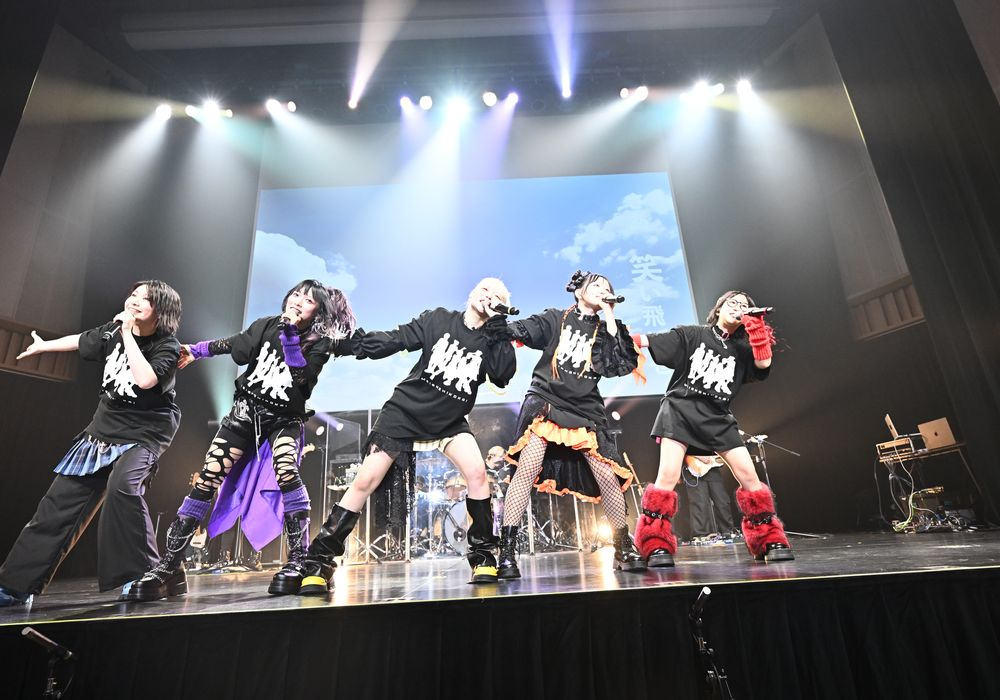
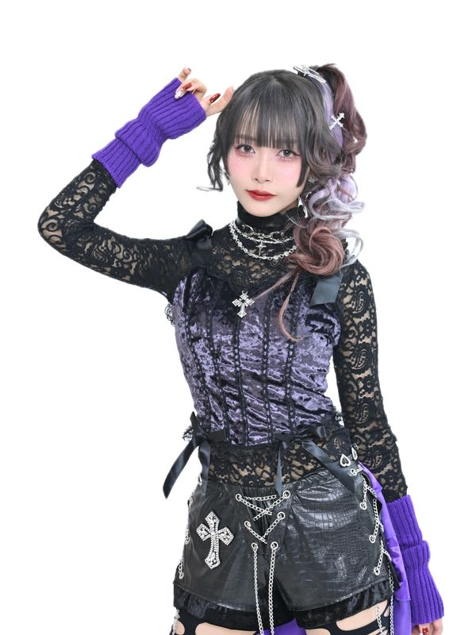
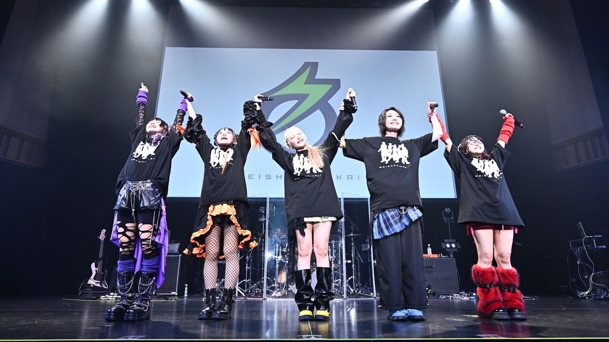

NEW
MEMBER
AUDITION
これまでの音楽と表現を、
次のステージへ。
SNS総フォロワー120万人超の音楽グループ「名称非公開」が、ANCHORの全面プロデュースによる新体制メンバーオーディションを開催。2027年1月24日の新体制発表に向けて、新しい仲間を募集します。
ABOUT PROJECT
新しい名称非公開を作るためのオーディション
SNSでは満たされない寂しさ。学校や社会への不満や不安。人生の劣等感。
誰にも言えない枯れた心を謳う、
本音の代行人が集う場所を。
世論を切り裂く挑発的な歌詞と、銃弾のようなミクスチャーロックサウンド。これまでの音楽と表現を次のステージへ連れていく、新しい仲間を募集します。



PRODUCE
企画・音楽・最終審査のクリエイティブディレクション
ANCHORが全面プロデュースする新体制メンバーオーディションを開催
アニメ、ゲーム、声優、アイドル、アーティストへの楽曲提供・プロデュースを手がける音楽プロデューサー。TVアニメ「地縛少年花子くん」OPテーマ「No.7」（地縛少年バンド）を制作。スマートフォン向けゲーム「A3!」では第四部主題歌をはじめ多数の楽曲を担当。
2017年にピエール中野（凛として時雨）、Nob（MY FIRST STORY）、滝善充（9mm Parabellum Bullet）とクリエイターユニットZiNGを結成。大森靖子・ZOCのサウンドプロデュースも手がける。2022年にTOY'S FACTORYからメジャーデビューし、映画「サバカン SABAKAN」の主題歌を担当。2026年にはタケヤキ翔、声優・廣瀬大介と3人組音楽ユニット「Ando（アンドゥ）」を結成し、TVアニメ「乙女ゲー世界はモブに厳しい世界です2」主題歌「人生エンドロール」の作詞・作編曲を担当。
JUDGES
審査員
ANCHORとともに音楽ユニット「Ando」で活動するタケヤキ翔・廣瀬大介、そして元ZOCの振付家・山之口理香子が、あなたの歌とパフォーマンスを審査します。
ほか、審査員は決定次第お知らせします。
MEMBER
新体制を担うメンバー
世論を切り裂く挑発的な歌詞と、銃弾のようなミクスチャーロックサウンドが特徴の音楽グループ。元BiSをはじめ、異なるフィールドの才能が集結。ANCHORによる全曲プロデュース。2027年1月24日、ヒューガー・トギーと新メンバーで新体制へ。

AUDITION SCHEDULE
応募から2027年1月24日の新体制発表までの流れ
※日程は仮案です。確定次第お知らせします。
OVERVIEW
募集要項
- 募集内容
- 名称非公開の新体制を担うメンバー
- 応募受付
- 2026年11月1日（日）〜 11月23日（月・祝）
応募順に一次審査を行い、一次結果は11月27日までにご連絡します。 - 選考
- 一次（書類・動画） → 二次（対面） → 三次（合宿）
- 審査員
- タケヤキ翔、廣瀬大介、山之口理香子 ほか
- 提出内容
-
- プロフィール・活動歴
- 顔写真・全身写真
- 歌唱動画・ダンス動画
- 自己PR・志望動機
- 新体制発表
- 2027年1月24日
- 募集人数
- [要確認]
- 応募資格
- [要確認]
- 活動条件
- [要確認]
- 撮影について
- 合宿審査の様子は撮影し、映像として公開する場合があります
※詳細は確定次第お知らせします。
FAQ
よくある質問

あなたの応募を
お待ちしています。
最新情報は公式X @MEISHOHIKOKAI でお知らせします。
